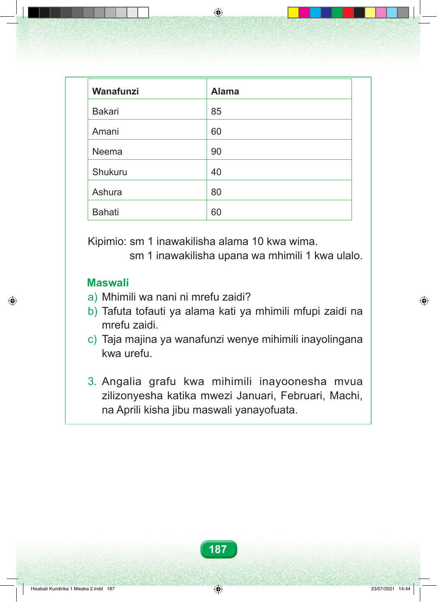

Wanafunzi Alama Bakari 85 Amani 60 Neema 90 Shukuru 40 Ashura 80 Bahati 60 Kipimio: sm 1 inawakilisha alama 10 kwa wima. sm 1 inawakilisha upana wa mhimili 1 kwa ulalo. Maswali a) Mhimili wa nani ni mrefu zaidi? b) Tafuta tofauti ya alama kati ya mhimili mfupi zaidi na mrefu zaidi. c) Taja majina ya wanafunzi wenye mihimili inayolingana kwa urefu. 3. Angalia grafu kwa mihimili inayoonesha mvua zilizonyesha katika mwezi Januari, Februari, Machi, na Aprili kisha jibu maswali yanayofuata. 187 Hisabati Kundirika 1 Mwaka 2.indd 187 23/07/2021 14:44